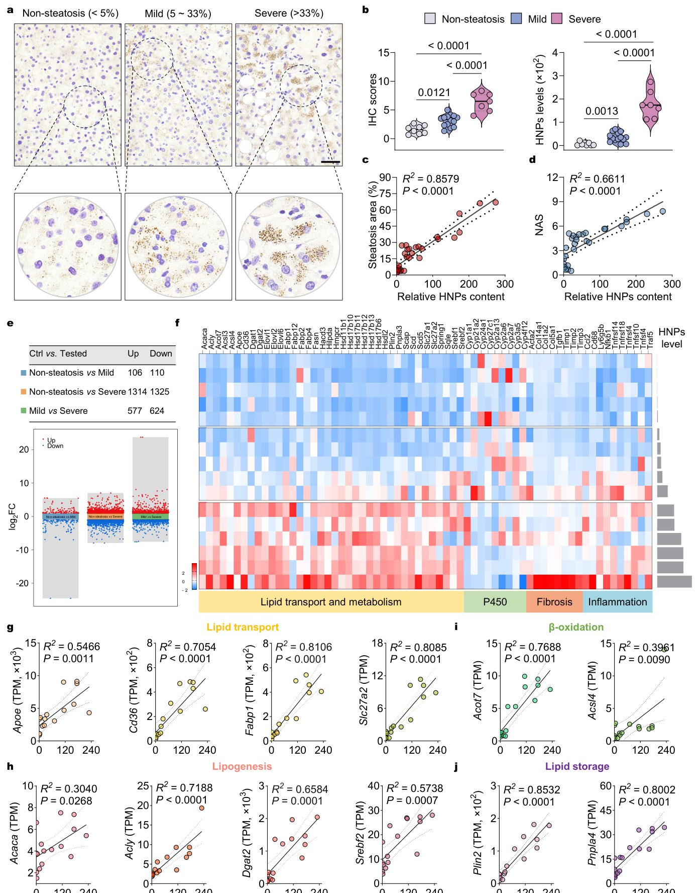
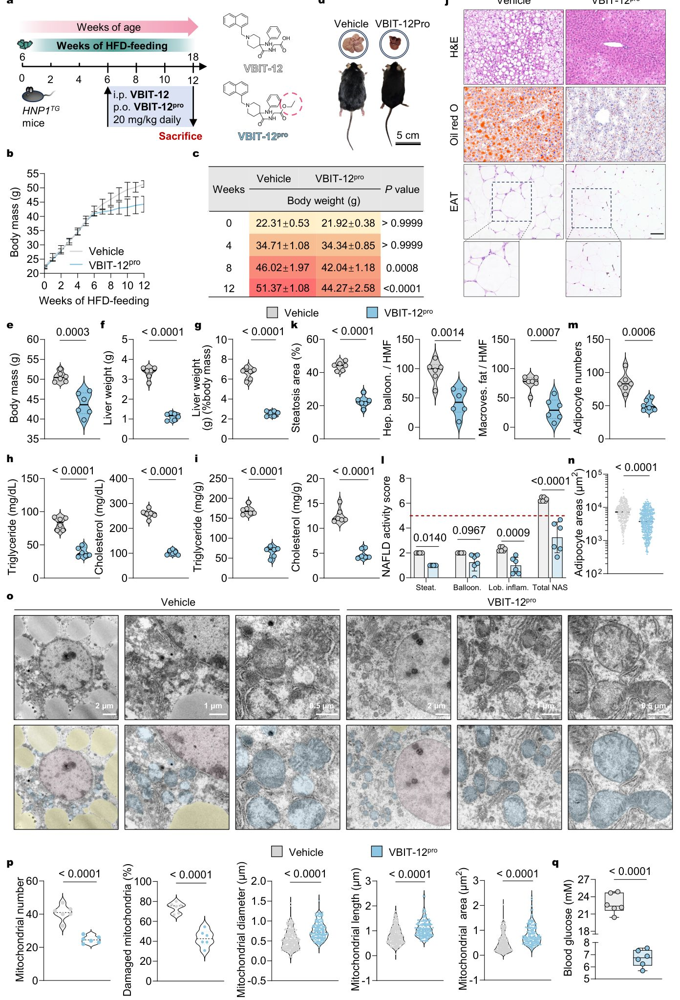
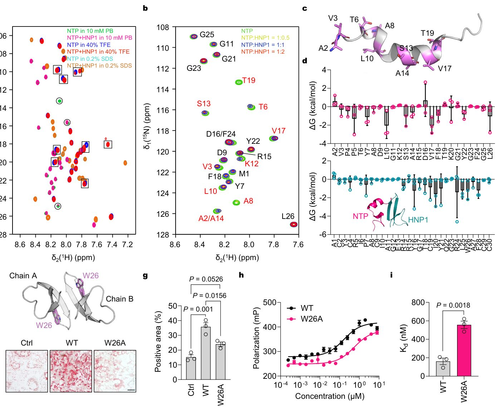

Иммундық жасушалар бауырдың майлануын қалай қоздырады


Суреттің толық сипаттамасы
1-сурет. Бауырдағы HNP1 инфильтрациясының жоғарылауы клиникалық пациенттердегі бауыр стеатозымен корреляцияланады. (a) Бауыр стеатозының әртүрлі ауырлық дәрежесіндегі адам бауырының кесінділеріндегі HNP деңгейлері мен таралуын көрсететін өкілді ИГХ суреттері. Масштабты сызық: 100 мкм. (b) Бауыр стеатозы жоқ (n = 8) немесе жеңіл (n = 14) және ауыр стеатозы бар (n = 7) пациенттердің бауыр кесінділерін ИГХ бағалау, сондай-ақ осы үлгілердегі ИГХ-оң аймақтар бойынша нормаланған HNP деңгейлерінің жартылай сандық талдауы. (c-d) Бауыр HNP деңгейлерінің стеатоз аймағымен (c) және НАЖБП белсенділік көрсеткіштерімен (d) корреляциялық талдауы. (e) Минималды, жеңіл және ауыр бауыр стеатозы топтарынан алынған клиникалық үлгілердегі дифференциалды экспрессияланатын гендерді (DEG) көрсететін көп жанартаулық графиктер. (f) Он алты адам бауыры үлгісіндегі липидтерді тасымалдау және метаболизмі, P450, фиброз және қабынумен байланысты гендердің экспрессиясының өзгеруін көрсететін RNA-seq профильдері, салыстырмалы HNP деңгейлері бағаналы диаграммалар түрінде қосылған. (g-j) Салыстырмалы HNP мазмұны мен липидтерді тасымалдау (g), липогенез (h), β-тотығу (i) және липидтердің жиналуы (j) арасындағы корреляцияны көрсететін шашырау диаграммалары. Детерминация коэффициенттері (R2) және P мәндері көрсетілген. Статистикалық маңыздылық көптік салыстырулар үшін Бонферрони түзетуімен бір факторлы дисперсиялық талдау арқылы есептелді.
Бауырдың метаболикалық ауруы кезінде ағзаға нейтрофилдер — туа біткен иммунитет жасушалары енеді. Бұрын олардың бұл процестегі рөлі белгісіз еді. Жаңа зерттеу көрсеткендей, нейтрофил ақуыздары гепатоциттердің митохондрияларын зақымдап, майдың жиналуына және аурудың асқынуына әкеледі.
Басты ойлар
- Нейтрофилдік альфа-дефензиндер бауыр митохондрияларында VDAC1 мультимеризациясын қоздырады
- Тіндердегі HNP мөлшері науқастардағы стеатоздың ауырлығымен байланысты
- HNP-VDAC1 өзара әрекеттесуін бөгеу тышқандарда стеатогепатиттің алдын алады
Толығырақ
Метаболикалық дисфункциямен байланысты стеатотикалық бауыр ауруы (MASLD) липидтердің жиналуымен және қабынумен сипатталады. Авторлар MASLD бар науқастардың биопсиясын талдап, тіндердегі адам нейтрофилдік пептидтерінің (HNP немесе альфа-дефензиндер) мөлшері мен стеатоздың ауырлығы арасындағы тікелей байланысты анықтады. In vitro тәжірибелерінде HNP гепатоциттерге еніп, митохондриялардың сыртқы мембранасындағы VDAC1 (потенциалға тәуелді аниондық арна 1) ақуызының мультимеризациясын тудыратыны көрсетілді. Бұл органеллалар жұмысының бұзылуына және липидтердің жиналуына әкеледі.
Гипотезаны тексеру үшін HNP1 экспрессиялайтын трансгенді тышқандар қолданылды. Стандартты рационда жануарлар сау қалды, бірақ майлы диета аясында оларда семіздік пен стеатогепатит дамыды. VDAC1 мультимеризациясын бөгейтін дәріні қолдану патологияның алдын алды. Осылайша, HNP бауыр липидтермен шамадан тыс жүктелген кезде патогендік эффекторлар ретінде әрекет етеді.
Шектеулер
Нәтижелер трансгенді тышқандар мен жасуша дақылдарында алынған, бұл клиникалық сынақтарда қауіпсіздікті растауды талап етеді.
Мақаланың толық талдауы
Түйіндеме
Метаболикалық дисфункциямен байланысты бауырдың майлы ауруы (MASLD) қарапайым стеатоздан стеатогепатит сатысына өткенде бауыр тініне нейтрофилдердің инфильтрациясы байқалады. Алайда, нейтрофил эффекторлары бұл ауысудың жай ғана маркері ме, әлде оның тікелей себепкері ме деген сұрақ белгісіз болып келді.
Біздің зерттеуіміз адамның нейтрофилдік пептидтері (HNP) немесе α-дефензиндер аурудың жай ғана жанама қатысушылары емес, оның негізгі қозғаушы күштері екенін көрсетеді. Бауыр гемангиомасына байланысты хирургиялық ота жасалған және MASLD белгілері бар науқастарда бауыр биоптаттарындағы HNP мөлшері стеатоздың гистологиялық ауырлығымен корреляцияланады. In vitro тәжірибелерінде HNP гепатоциттерге еніп, митохондриялардың сыртқы мембранасындағы потенциалға тәуелді аниондық арна 1 (VDAC1) мультимеризациясын қоздыратыны, бұл өз кезегінде митохондриялық дисфункцияға және липидтердің жиналуына әкелетіні анықталды.
Маңызды
HNP пептидтері гепатоциттер митохондрияларында VDAC1 мультимеризациясын тудырады, бұл стеатогепатиттің дамуына тікелей әсер етеді.
Липидтермен шамадан тыс жүктелген диета кезінде (стандартты рационда емес), HNP1 трансгенді тышқандарында семіздік пен стеатогепатиттің өршуі байқалды. Бұл патологиялық үдерісті HNP әсерінен болатын VDAC1 мультимеризациясын тежейтін ауызша қабылданатын продәрі арқылы жоюға болады. Бұл нәтижелер нейтрофилдердің туа біткен иммунитетін гепатоциттердің митохондриялық дисфункциясымен байланыстырады, қорғаныш қызметін атқаратын HNP-ді липидтермен жүктелген гепатоциттерде патогендік эффекторлар ретінде қайта қарастырады және HNP–VDAC1 осін MASLD үшін терапевтік нысана ретінде айқындайды.
Түсіндірме
VDAC1 — митохондриялардың сыртқы мембранасындағы ақуыздық арна, ол метаболиттердің тасымалдануын реттейді; оның бақылаусыз мультимеризациясы жасушаның энергетикалық алмасуын бұзады.
Кіріспе
Метаболикалық дисфункция және бауыр ауруларының өршуі
Метаболикалық қауымдастырылған стеатотикалық бауыр ауруы (MASLD), бұрын NAFLD деп аталған, әлем халқының 30%-ына дейін әсер ететін ең көп таралған созылмалы бауыр ауруы болып табылады. Патология қалыпты стеатоздан (MASL) қабыну, митохондриялық дисфункция, эндоплазмалық тор стрессі және фиброзбен сипатталатын стеатогепатит (MASH) спектріне дейін ауытқиды, бұл цирроз бен гепатоцеллюлярлы карцинома қаупін айтарлықтай арттырады. Қарапайым стеатоздың MASH-қа өту механизмдері бауыр метаболизмі саласындағы шешілмеген негізгі мәселе болып қала береді.
Маңызды
Стеатоздан MASH-қа өту қабыну процестерімен байланысты, мұнда айналымдағы лейкоциттердің 50–70%-ын құрайтын нейтрофилдердің рөлі жеткіліксіз зерттелген, дегенмен олар қабыну кезінде тіндерге жаппай ену қабілетіне ие.
Нейтрофилдер иммундық жүйенің алғашқы «жауапкерлері» болғанымен, олардың MASLD патогенезіндегі рөлі резидентті макрофагтарға қарағанда аз зерттелген. MASLD кезінде нейтрофилдер қан ағымынан бауыр тініне белсенді көшіп, қабынуды күшейтеді. Қорғаныс қызметтерін атқарғаннан кейін, бұл жасушалар бағдарламаланған өлімге ұшырап, α-дефензиндер 1–4 (HNP 1–4) бөледі. Адам ағзасында тәулігіне 10–15 мг/кг дене салмағына өндірілетін бұл катионды пептидтер дәстүрлі түрде микробқа қарсы агенттер деп саналған. Алайда, олардың иммундық жауап аяқталғаннан кейінгі рөлі түсініксіз күйінде қалып отыр.
Дефензиндер және митохондриялық дисфункция
Бауыр ауруларындағы дефензиндердің рөлі туралы қолда бар деректер қайшылықты: кейбір зерттеулер HNP1-3 жоғары деңгейін фиброздың ауырлығымен байланыстырса, басқалары гиперхолестеринемия кезінде қорғаныс әсерін көрсетеді. Авторлар HNP жай ғана қабыну маркерлері ме, әлде гепатоциттерге әсер ететін белсенді патология қоздырғыштары ма деген сұрақты ортаға салады. Олардың ықтимал нысанасы — митохондрияның сыртқы мембранасындағы негізгі ақуыз VDAC1, ол метаболиттер мен Ca2+ иондарының тасымалдануына жауап береді.
Түсіндірме
VDAC1 (потенциалға тәуелді анионды арна 1) — бұл митохондрияның «қақпасы»; оның олигомеризациясы (молекулалардың жабысуы) органелла жұмысын бұзады, бұл жасуша өліміне және метаболикалық ақауларға әкеледі.
Жұмыста HNP-дің стеатозбен корреляциясын талдау үшін бауыр гемангиомасы бойынша ота жасалған науқастардың бауыр биопсиясының үлгілері пайдаланылды. HNP1-трансгенді тышқандардағы зерттеулер жоғары майлы диета кезінде оларда стеатогепатит пен семіздік дамитынын, ал стандартты жемде фенотиптің көрінбейтінін көрсетті. VDAC1 олигомеризациясын блоктайтын ауызша қабылданатын продәрілік затты қолдану бұл әсерлерді жояды. Осылайша, «нейтрофилді дефензиндер — VDAC1» осі гепатоциттер липидтермен артық жүктелген кезде MASLD өршуінің шешуші буыны болып табылады.
Нәтижелер
Бауырдағы HNP деңгейінің жоғарылауы клиникалық пациенттердегі бауыр стеатозының ауырлығымен тығыз корреляцияда
Нейтрофилдер бөлетін альфа-дефензиндердің негізгі бөлігін HNP 1-3 құрайды, ал HNP4 өте аз мөлшерде экспрессияланады (Rasm S1). HNP 1-3-тің бауыр стеатозындағы клиникалық маңызын бағалау үшін бауыр гемангиомасымен операция жасалған 29 пациенттен биопсия алынды. Тіндер Oil Red O (ORO) боялу ауданына қарай топтарға бөлінді: стеатозсыз (<5%, n=8), жеңіл стеатоз (5-33%, n=14) және ауыр стеатоз (>33%, n=7). Гистопатологиялық талдау (H&E, ORO, Массон трихромы, Sirius red) стеатоз өршіген сайын баллонды дистрофия мен макровезикулярлы стеатоз белгілері артатынын көрсетті (Rasm S2a-b), бұл NAFLD белсенділік балдарының (NAS) және фиброздың өсуімен расталады (Rasm S2c-d). Sirius red бояуы IV типті коллагеннің жинақталуын көрсетті, ал ауыр стеатоз кезінде I типті коллагеннің көбеюі байқалды, бұл цирроз қаупін болжайды (Rasm S2a, S2e).
Маңызды
Ауыр стеатоз кезінде бауырдағы HNP 1-3 деңгейі бақылау топтарына қарағанда айтарлықтай жоғары және стеатоз ауданымен (P < 0.0001, R2 = 0.8579), NAS (P < 0.0001, R2 = 0.6611) және фиброзбен (P < 0.0001, R2 = 0.6038) тығыз корреляцияда.
Иммуногистохимиялық (ИГХ) талдау ауыр стеатоз тобында үлгілердің 57,1%-ы күшті және 42,9%-ы орташа оң нәтиже бергенін, ал стеатозсыз топта 100% үлгілер әлсіз оң болғанын көрсетті (Rasm 1b, Rasm S2f). Транскриптомикалық талдау дифференциалды экспрессияланатын гендер (DEG) санының 216-дан (стеатозсыз vs жеңіл) 2639-ға дейін (стеатозсыз vs ауыр) өскенін анықтады (Rasm 1e). Ауыр стеатоз кезінде липидтер тасымалы, метаболизм, фиброз және қабыну жолдары белсендіріліп, P450 гендері төмендеген (Rasm 1f). Липид алмасу гендері (Apoe, Cd36, Fbp1, Slc27a2, Acaca, Acly, Dgat2, Srebf2, Acot7, Acsl4, Plin2, Pnpla4) HNP деңгейімен корреляцияланған (Rasm 1g-j).
HNP1 трансгенді тышқандар жоғары майлы диетада MASLD дамуына бейім
Тышқандарда нейтрофилдер дефензиндер бөлмейтіндіктен, CRISPR-Cas9 және нейтрофилді эластаза промоторын қолданып, HNP1 трансгенді (HNP1TG) тышқандар жасалды. DEFA1 гені енгізілгеннен кейін (Rasm S3), 6 апталық еркек HNP1TG және жабайы типтегі (WT) тышқандар 12 апта бойы жоғары майлы диетамен (HFD) қоректендірілді (Rasm 2a). Азық тұтыну бірдей болғанына қарамастан (Rasm S4a), HNP1TG тышқандары тезірек салмақ жинады (Rasm 2b, S4b), бұл дене мен бауыр көлемінің ұлғаюына әкелді (Rasm 2c). Трансгенді тышқандар 4, 8 және 12-апталарда WT бақылау тобына қарағанда сәйкесінше 14,7%, 18,1% және 10,6%-ға ауыр болды (Rasm 2d). Бақылау диетасында (CFD) фенотиптік айырмашылықтар байқалмады (Rasm S5a-d).
Түсіндірме
Трансгенді тышқандар — генетикалық инженерия арқылы белгілі бір ген енгізілген немесе өзгертілген жануарлар. [!warning] Зерттеу HNP1-дің метаболизмге әсерін көрсеткенімен, адамдардағы иммундық жүйенің ерекшеліктеріне байланысты нәтижелерді сақтықпен түсіндіру керек.
Бауыр мен май тіндеріндегі патологиялық өзгерістер
Жоғары майлы диетада (HFD) 12 апта бойы ұсталған тышқандар түні бойы аш қалдырылғаннан кейін эвтаназияланды. HNP1TG трансгендік тышқандарында бауыр стеатозының айқын белгілері: гепатоциттердің баллонды дистрофиясы, макровезикулярлық майлану және қабыну инфильтрациясы байқалды (2e-сурет). Жартылай сандық талдау бұл патологиялық маркерлердің айтарлықтай күшейгенін растады (2f-h суреттері). Сонымен қатар, дене және бауыр салмағы артты (2i-j суреттері), бұл ретте бауыр индексі (бауыр салмағының дене салмағына қатынасы) трансгендік дараларда WT бақылау тобына қарағанда кемінде екі есе жоғары болды (2k-сурет). Қызығы, HNP1TG тышқандарында эпидидимальды май тінінің (EAT) салмағы шамамен 25%-ға төмендеген (SN c-d суреттері).
Маңызды
HNP1TG тышқандарында бауыр индексі екі есе артуымен және май тінінің 25%-ға азаюымен сипатталатын ауыр бауыр стеатозы дамыды.
EAT май тінінде адипоциттердің үлкеюі және «тәж тәрізді құрылымдардың» (CLS) пайда болуы анықталды, бұл липид алмасуының жүйелі қайта құрылуы мен созылмалы қабынудан хабар береді (SN e-g суреттері). Клиникалық тұрғыдан, барлық HNP1TG тышқандарында MASH сатысы (NAS > 5) дамыды, ал WT тышқандарында мұндай жағдай байқалмады (SN h-суреті). Трансгендік тышқандар бауырында фиброз талшықтары кесіндінің шамамен 9% аумағын алып жатса, WT тышқандарында фиброз іс жүзінде анықталмады (SN i-j суреттері).
Түсіндірме
MASH (метаболикалық қауымдасқан стеатогепатит) — бауыр қабынуы мен жасушалардың зақымдануымен жүретін бауыр майлануының прогрессивті түрі.
Метаболикалық бұзылыстар және омикстік талдау
HNP1TG тышқандарында қан сарысуы мен бауырдағы триглицеридтер мен холестерин деңгейінің жоғары екендігі (2l-m суреттері), бауырдың зақымдану белгілерімен бірге анықталды (SN k-l суреттері). HNP1TG тышқандарында аш қарынға қан глюкозасы 50%-ға өсті (SN m-суреті). Глюкозаға төзімділік тесті (GTT) глюкозаны реттеу қабілетінің төмендегенін (2n-сурет) және инсулинге төзімділіктің дамығанын көрсетті (SN n-o суреттері). Бақылау диетасында (CFD) топтар арасында айтарлықтай айырмашылықтар байқалмады (SN e-t суреттері).
Абайлаңыз
Зерттеу тышқандар моделінде жүргізілген, сондықтан нәтижелерді адам метаболизміне тікелей көшіруде сақтық таныту қажет.
Бауырдың транскриптомикалық және метаболомикалық талдауы HNP1TG және WT топтары арасында негізгі компоненттер талдауы (PCA) бойынша айқын айырмашылықтарды көрсетті (SN 6-сурет). Липид алмасуы гендеріндегі өзгерістерден бөлек (2o-сурет), трансгендік тышқандарда холестерин мен триглицеридтердің ұзын тізбекті түрлері көбейген. Бұл май қышқылдарын митохондрияға тасымалдайтын L-карнитин көлік жүйесінің бұзылғанын білдіреді (2p-q суреттері). Нәтижелер HNP1 экспрессиясының MASLD дамуына бейімділіктің негізгі факторы екенін растайды.
HNP1 гепатоциттерде липидтердің жиналуына ықпал ететін митохондриялық дисфункцияны тудырады
HNP1-дің бауыр стеатозының дамуындағы зиянды рөлін in vitro зерттеу үшін BNL CL.2 тышқан гепатоциттері желісі, бастапқы тышқан гепатоциттері және THLE-2 адам гепатоциттері желісі қолданылған липотоксикалық модель жасалды. Жасушалар 0,5 мМ пальмитин қышқылымен (FFA) инкубацияланды (3a-сурет). Тәжірибелер көрсеткендей, 4 мкМ HNP1 қосу барлық үш жасуша түрінде липидтердің жиналуын айтарлықтай арттырды, ал сызықтық L-HNP1 пептиді бірдей концентрацияда мұндай әсер көрсетпеді (3b-c-суреттер). Бұл HNP1-дің липидтердің жиналуын күшейту қабілеті оның құрылымына байланысты екенін білдіреді.
Маңызды
HNP1 липотоксикалық стресс жағдайында гепатоциттерде липидтердің жиналуын күшейтеді, бұл әсер пептидтің құрылымдық ерекшеліктеріне тікелей тәуелді.
Молекулалық механизмдерді түсіну үшін 4 мкМ HNP1 әсеріндегі бастапқы тышқан гепатоциттеріне RNA-seq талдауы жүргізілді. Тек FFA-мен өңделген жасушалардың транскрипция профилі бақылау тобына жақын болды, ал FFA және HNP1 бірге қолданылғанда иммунометаболикалық жолдардың бұзылуы байқалды (S7a-сурет). GO талдауы липид алмасуы, энергия гомеостазы және қабынумен байланысты гендер экспрессиясының өзгергенін көрсетті (S7b-сурет). Желілік талдау бұл өзгерістерді MASLD және митохондриялық процестермен (иондық арналар мен ақуыз кешендері) байланыстырды (S7c-сурет).
Түсіндірме
RNA-seq — жасушадағы барлық гендердің белсенділігін бір уақытта бағалауға мүмкіндік беретін әдіс, ал GO-талдау бұл гендерді биологиялық функцияларына қарай топтастырады.
Катионды амфифильді молекула ретінде HNP1 теріс зарядталған митохондриялық мембраналармен өзара әрекеттесе алады. FAM-мен белгіленген HNP1 жасуша ішіне еніп, митохондриялармен колокализацияланатыны расталды (3d-сурет). 12 апта бойы жоғары майлы диета (HFD) алған HNP1TG тышқандарының бауыр тіндерінің электронды микроскопиясы (TEM) митохондриялардың айтарлықтай зақымданғанын: кристалардың жойылуын, өлшемдерінің кішірейуін және фрагментацияны көрсетті (3e-сурет, S8a-сурет). Дәл осындай өзгерістер стеатозы бар науқастардың (n = 6) үлгілерінде де анықталды (3f-сурет, S8b-сурет). Бұл нәтижелер HNP1-дің тікелей митохондрияларға әсер етіп, стеатозға тән дисфункцияны тудыратынын дәлелдейді.
Абайлаңыз
Зерттеу жасушалық желілер, трансгенді тышқандар және шектеулі клиникалық үлгілер деректеріне негізделген, сондықтан нәтижелерді адам патологиясының барлық түрлеріне толық қолдануда сақтық таныту қажет.
HNP1 VDAC1-тің N-терминалды спиральді доменін нысанаға алып, оның олигомеризациясын ынталандырады және гепатоциттердегі липид алмасуының бұзылуына әкеледі.
Альфа-дефензиндер иммундық жауапты реттеу үшін әртүрлі молекулалық нысаналармен, соның ішінде мембраналық рецепторлармен әрекеттеседі. Митохондриядағы HNP1 нысанын анықтау үшін авторлар VDAC1 ақуызына назар аударды. Транскриптомикалық талдау потенциалға тәуелді иондық арналардың реттелуімен байланысты жолдардың байығанын көрсетті (Сурет SN). HNP1 мен VDAC1-дің науқастардың бауыр тіндерінде бірге орналасуы (кокализация) анықталды (Сурет 4a). Тазартылған VDAC1 (N-терминалды спиральді домені бар β-бөшкелі ақуыз, Сурет 4b) FAM-белгіленген HNP1-мен флуоресценция поляризациясы әдісімен тексерілді. HNP1-дің VDAC1-мен K_d = 83,4 нМ болатын жоғары аффиндікпен байланысатыны расталды (Сурет 4c).

Суреттің толық сипаттамасы
4-сурет. HNP1 гепатоциттердегі липидтер метаболизмінің бұзылуына әкелетін олигомеризацияны ынталандыру үшін VDAC1-дің N-терминалды спиральді доменін нысанаға алады. (a) Бауыр стеатозы бар немесе жоқ клиникалық пациенттердің бауыр кесінділерінің иммунофлуоресцентті суреттері. Көк, ядро; жасыл, VDAC1; қызыл, HNP1. Масштабты сызық: 100 мкм. (b) Адам VDAC1 кристалдық құрылымы (PDB: 6G6U). (c-d) Флуоресцентті поляризациямен бағаланған HNP1-дің толық ұзындықтағы адам VDAC1 (c) және 26-аминқышқылды VDAC1 N-терминалды пептиді (d) мен байланысу жақындығы. Деректер үш биологиялық қайталанымнан орташа ± SEM ретінде ұсынылған. (e) VDAC1 олигомеризациясы нәтижесінде туындайтын механикалық және функционалдық нәтижелердің схемалық диаграммасы. (f) Тазартылған адам VDAC1-дің HNP1 арқылы қоздырылған олигомеризациясы электрофорез кезінде олигомерлерді тұрақтандыру үшін EGS өзара байланыстырушы реагентімен өңделгеннен кейін иммуноблоттинг көмегімен визуализацияланды. (g) 0,5 мМ пальмитин қышқылы, 4 мкМ HNP1 немесе 20 мкМ VBIT-12 болған немесе болмаған жағдайда тышқан бастапқы гепатоциттеріндегі VDAC1 олигомеризациясы иммуноблоттинг көмегімен визуализацияланды. (h) HNP1 өзінің N-терминалды доменімен өзара әрекеттесу арқылы VDAC1 олигомеризациясын ынталандыратын ұсынылған модельдің схемалық диаграммасы. (i) 4 мкМ HNP1 және/немесе 20 мкМ VBIT-12 болған немесе болмаған жағдайда 0,5 мМ пальмитин қышқылымен өңделген ORO-мен боялған гепатоциттердің өкілді суреттері. Масштабты сызық, 100 мкм. (j) ORO-оң аймақ пайыздары негізінде гепатоциттердегі липидтердің жиналуын жартылай сандық талдау (n = 3 биологиялық қайталаным). Деректер орташа ± SD ретінде көрсетілген. Статистикалық маңыздылық көптік салыстырулар үшін Бонферрони түзетуімен бір факторлы дисперсиялық талдау арқылы талданды. (k) Бақылау ретінде тасымалдаушы болған жағдайда, 4 мкМ HNP1 немесе 4 мкМ HNP1 плюс 20 мкМ VBIT-12-мен FFA-мен өңделген немесе өңделмеген (бос) Hoechst (апоптоз) және TMRE (митохондриялық потенциал) боялған гепатоциттердің өкілді суреттері. Ақ көрсеткілер, апоптотикалық гепатоциттер. Қара көрсеткілер, мембраналық потенциал деполяризациясы бар гепатоциттер. Масштабты сызық: 50 мкм. (l-m) Гепатоциттердегі Hochest (l) және TMRE (m) флуоресцентті қарқындылығын жартылай сандық талдау (n = 3 биологиялық қайталаным). Деректер орташа ± SD ретінде көрсетілген. Статистикалық маңыздылық көптік салыстырулар үшін Бонферрони түзетуімен бір факторлы дисперсиялық талдау арқылы талданды. (n) Әртүрлі емдеу әдістерімен гепатоциттердегі липогенез және липидтер катаболизмімен байланысты гендердің транскрипциялық деңгейлері. Салыстырмалы mRNA деңгейлері 2-ΔΔCT математикалық моделіне сәйкес бос бақылауларға қатысты сандық анықтау ретінде есептелді. Қорытынды деректер Z-баллмен нормаланды және микрочипті жылу картасында Z-балл ретінде көрсетілді. Әр топ үшін n = 3 биологиялық қайталаным.
Маңызды
HNP1 VDAC1-пен K_d = 83,4 нМ аффиндікпен тікелей байланысады және оның N-терминалды спиральді доменін нысанаға алады.
Байланысу орнын анықтау үшін N-терминалды спиральді доменді қамтитын 26 аминқышқылдық NTP пептиді қолданылды. HNP1 NTP-мен K_d = 161 нМ аффиндікпен байланысты (Сурет 4d). VDAC1 тотығу стрессі жағдайында олигомеризацияға бейім келіп, митохондрияның сыртқы мембранасында Ca²⁺, мтДНҚ, цитохром c және АФК тасымалдауға арналған арналар түзеді (Сурет 4e). Бұл процестер липоапоптоз бен инсулинге төзімділікке әкеледі. HNP1-дің VDAC1 димерлері, тримерлері және жоғары ретті мультимерлерінің түзілуін күшейтетіні in vitro жағдайында расталды (Сурет 4f). 0,5 мМ FFA және 4 мкМ HNP1 бар тышқан гепатоциттерінде VDAC1 олигомеризациясы күшейді, бұл VBIT-12 ингибиторы арқылы жойылды (Сурет 4g-h).
Түсіндірме
VBIT-12 — VDAC1 олигомеризациясын блоктайтын арнайы ингибитор, ол митохондриялық дисфункцияның алдын алу үшін қолданылады.
ТЭМ әдісімен 0,5 мкМ концентрацияда HNP1 және NTP қоспасының ірі олигомерлер түзетіні көрсетілді (Сурет SN). Динамикалық жарық шашырату (DLS) әдісі 0,1, 0,5, 2,5 және 12,5 мкМ концентрацияларда гидродинамикалық диаметрдің (d_h) дозаға тәуелді өсуін растады (Сурет SN). VBIT-12 HNP1 тудырған стеатоз, апоптоз және мембраналық потенциалдың деполяризациясын тиімді төмендетті (Сурет 4i-m). RT-qPCR талдауы HNP1-дің FFA қатысуымен липид катаболизмі гендерін төмендететінін және липогенез гендерін күшейтетінін көрсетті, ал VBIT-12 бұл профильді қалпына келтірді (Сурет 4n).
Абайлаңыз
Зерттеу тышқан гепатоциттері мен in vitro модельдерінде жүргізілген, сондықтан нәтижелерді in vivo жағдайында сақтықпен түсіндіру қажет.
HNP1 және VDAC1 өзара әрекеттесуінің құрылымдық негіздері
HNP1-дің VDAC1-дің N-терминалды спиральді доменімен өзара әрекеттесуін зерттеу үшін 15N-белгіленген NTP пептиді қолданылды (Rasm SN). Талдау 2D 1H-15N гетероядролық бір квантты корреляциялық (HSQC) ЯМР-спектроскопиясы әдісімен жүргізілді. 10 мМ фосфатты буферде (PB) NTP 7,3–9,0 м.д. диапазонында шыңдары бар α-спиральді конформацияны көрсетті. HNP1-ді NTP-ге 0,2:1 молярлық қатынаста қосқанда бірқатар резонанстық шыңдардың әлсіреуі мен ығысуы байқалды (Rasm 5a). 40% трифторэтанол (TFE) қатысуымен шыңдар дисперсті бола түсті, бұл α-спиральділіктің күшеюін білдіреді; бұл жағдайда HNP1 сигналдың өшуіне емес, химиялық ығысуларға әкелді.
Түсіндірме
HSQC ЯМР әдісі атом ядроларының химиялық ортасындағы өзгерістерді бақылауға мүмкіндік береді, бұл байланысуға қатысатын молекула бөліктерін анықтауға көмектеседі.
Ақуыздар арасындағы өзара әрекеттесу 0,2% натрий додецилсульфатын (SDS) қосқанда толығымен тоқтады, бұл HNP1 бар және жоқ кездегі NTP спектрлерінің толық сәйкес келуімен расталды (Rasm 5a). 200 мкМ NTP-ді 0,5, 1 немесе 2 эквивалент HNP1-мен титрлеу кезінде A2, V3, T6, A8, L10, K12, S13, A14, V17 және T19 қалдықтары үшін сигналдар қарқындылығының дозаға тәуелді төмендеуі байқалды, бұл HNP1 әсерінен NTP олигомеризациясын көрсетеді (Rasm 5b). Ең маңызды ығысулар A2, V3, T6, A14 және V17 үшін тіркелді.
Маңызды
ЯМР талдауы VDAC1 N-терминалды доменінің HNP1-мен байланысуына қажетті маңызды қалдықтарды анықтады, бұл процесс дозаға тәуелді және пептидтің олигомеризациясына әкеледі.
Деректерді растау үшін 200-нс молекулалық динамика (МД) модельдеуі жүргізілді. MM/GBSA әдісі бойынша есептеулер HNP1-дің C-терминалды қалдықтары байланысу энергиясына ең үлкен үлес қосатынын және Trp26 негізгі рөл атқаратынын растады. W26A-HNP1 мутантты аналогымен жүргізілген эксперименттік тексеру флуоресценция поляризациясы сынағында NTP-мен байланысудың айтарлықтай әлсірегенін көрсетті. Тышқандардың бастапқы гепатоциттеріндегі тәжірибелерде W26A мутациясы дефензин тудыратын липидтердің жиналуын айтарлықтай төмендетті, бұл Trp26 қалдығының функционалдық маңыздылығын растайды (Rasm 5e-i).
Абайлаңыз
Зерттеу оқшауланған пептидтер мен бастапқы жасуша дақылдарында жүргізілгендіктен, нәтижелерді күрделі организм процестеріне экстраполяциялауда сақтық таныту қажет.
VBIT-12 продәрісін ішке қабылдау HFD-мен қоректенген HNP1TG тышқандарында МАСЛЖ дамуына жол бермейді
VBIT-12-нің липидтердің жиналуын азайтудағы in vitro белсенділігіне сүйене отырып, біз «HNP1-VDAC1 олигомерлену» осіне әсер етудің жаңа терапевтік парадигмасын растау үшін оның in vivo тиімділігін тексердік. Ішке қабылдауды жеңілдету үшін біз VBIT-12-дегі бос карбоксил тобын эфирлеу арқылы VBIT-12 продәрісін (VBIT-12pro) синтездедік (Сурет S12). Бұл модификация липофильділікті арттырып, молекуланың ішек мембраналары арқылы өтіп, бауырға тиімді сіңуін қамтамасыз етті, онда эндогенді карбоксилэстеразалар эфир байланысын үзіп, белсенді VBIT-12-ні босатады. Сурет S13-те көрсетілгендей, VBIT-12 және әсіресе VBIT-12pro 100 мкМ ең жоғары концентрацияда THLE-2 және BNL CL.2 жасушалық желілеріне қатысты цитотоксикалық әсер көрсетпеді.
Түсіндірме
Продәрі — бұл ағзада метаболикалық өзгерістер нәтижесінде белсенді түрге айналатын дәрілік заттың модификацияланған түрі.
Алты апта бойы HFD (жоғары майлы диета) алған HNP1TG тышқандарына келесі 6 апта ішінде күн сайын 20 мг/кг VBIT-12pro ішке немесе 20 мг/кг VBIT-12 іш қуысына инъекция ретінде берілді (бақылау топтарымен салыстырғанда) (Сурет 6a). Алғашқы 6 аптада барлық топтар бірдей жылдамдықпен салмақ қосты (Сурет 6b және Сурет S14a-b, S15a). Алайда, емдеу басталғаннан кейін VBIT-12 немесе VBIT-12pro топтарында салмақ қосу айтарлықтай баяулады (Сурет S14c және S15b). 8 және 12 апталық HFD-ден кейін VBIT-12pro қабылдаған тышқандардың дене салмағы бақылау тобына қарағанда сәйкесінше 8,65% және 13,8%-ға төмен болды (Сурет 6c).


Суреттің толық сипаттамасы
6-сурет. VBIT-12 про-дәрісін ауыз арқылы енгізу арқылы HNP1TG тышқандарындағы MASLD ауруын жеңілдету. (a) HNP1TG тышқандарында MASLD-ға қарсы VBIT-12 және VBIT-12pro-ның in vivo тиімділігін бағалауға арналған эксперименттік дизайн. Салмағы 21-23 г болатын алты апталық еркек HNP1TG C57BL/6J тышқандары 6 апта бойы дәрі-дәрмексіз жоғары майлы диетамен (HFD) қоректендірілді, содан кейін келесі 6 апта ішінде күнделікті ішпердеішілік инъекция (i.p.) арқылы VBIT-12 немесе 20 мг/кг дозада ауыз арқылы (p.o.) VBIT-12pro берілді, содан кейін олар өлтіріліп, терең талдау үшін тіндері алынды. (b) HFD-мен қоректенген және тасымалдаушы немесе VBIT-12pro-мен емделген HNP1TG тышқандарының апталық дене салмағы (n = 6 тышқан әр топта). (c) 0, 4, 8 және 12-апталарда тасымалдаушы және VBIT-12pro-мен емделген HNP1TG тышқандарының дене салмағының жиынтық деректері мен статистикалық салыстырулары. (d) 12 апталық HFD диетасынан кейін тасымалдаушы немесе VBIT-12pro-мен емделген HNP1TG тышқандарының (төменде) және олардың бауырының (жоғарыда) өкілдік фотосуреттері. (e-g) 12 апталық HFD диетасынан кейін тасымалдаушы және VBIT-12pro-мен емделген HNP1TG тышқандарының дене салмағы (e), бауыр салмағы (f) және бауыр салмағының дене салмағына қатынасы (g) (n = 6 тышқан әр топта). (h-i) 12 апталық HFD диетасынан кейін тасымалдаушы және VBIT-12pro-мен емделген HNP1TG тышқандарының сарысуындағы (h) және бауырындағы (i) триглицерид пен холестерин деңгейлері (n = 6 тышқан әр топта). (j) H&E және ORO-мен боялған тышқан бауырының кесінділері мен H&E-мен боялған EAT кесінділерінің өкілдік суреттері. Масштабты сызғыш: 100 мкм. (k) ImageJ көмегімен әр кесінді үшін үш аймақ негізінде ORO-оң аймақтың пайыздық мөлшерін (сол жақта), баллондалған гепатоциттерді (ортасында) және макровезикулярлы майлы гепатоциттерді (оң жақта) сандық талдау (n = 6 тышқан әр топта). (l) 12 апталық HFD диетасынан кейін тасымалдаушы немесе VBIT-12pro-мен емделген HNP1TG тышқандары бауырының NAFLD белсенділік көрсеткіші (NAS) (n = 6 тышқан әр топта). (m) ImageJ көмегімен әр кесінді үшін үш аймақ негізінде EAT кесінділеріндегі адипоциттер санын есептеу (n = 6 тышқан әр топта). (n) Тасымалдаушы және VBIT-12pro-мен емделген HNP1TG тышқандарының H&E-мен боялған EAT кесінділеріндегі адипоциттер аймағын сандық талдау (сәйкесінше 305 және 510 адипоцит өлшенген). (o-p) HFD-мен қоректенген және тасымалдаушы немесе VBIT-12pro-мен емделген HNP1TG тышқандары бауырындағы гепатоцит митохондриялары мен липидті тамшылардың өкілдік TEM суреттері (o) және олардың TEM суреттері негізінде митохондриялық параметрлерді сандық талдау (p). (q) 12 апта бойы HFD-мен қоректенген және соңғы 6 апта ішінде күнделікті тасымалдаушы немесе VBIT-12pro-мен емделген HNP1TG тышқандарының сарысуындағы аш қарынға қандағы глюкоза деңгейлері. Барлық деректер орташа ± стандартты ауытқу (SD) ретінде көрсетілген. Статистикалық маңыздылық жұпталмаған, 2-жақты Стьюдент t-тесті арқылы талданды.
Маңызды
VBIT-12pro терапиясы тышқандардың дене салмағын 13,8%-ға, бауыр салмағын бақылау тобымен салыстырғанда 3 есеге азайтып, МАСЛЖ дамуын тоқтатты.
Емдеу бауыр көлемін қалыпқа келтірді (Сурет 6d және S14d). 6 апталық емдеуден кейін VBIT-12pro қабылдаған тышқандардың дене салмағы 14%-ға төмендеді (Сурет 6e), ал бауыр салмағы бақылау тобының үштен бірін құрады (Сурет 6f-g), сонымен бірге EAT тіндері 46%-ға артты (Сурет S15c-d). Қан сарысуы мен бауырдағы триглицерид және холестерин деңгейлері төмендеді, бұл ALT және AST деңгейлерінің төмендеуімен расталған бауыр зақымдануының азайғанын көрсетеді (Сурет S15e-f).
VBIT-12pro-ны ішке қабылдау баллондалған гепатоциттер мен макровезикулярлы стеатозды айтарлықтай азайтты (Сурет 6j-k). Бақылау тобындағы барлық тышқандарда МАСГ (NAS > 5) дамыса, VBIT-12pro ауруды МАСГ-дан МАСЛЖ-ға қайтарды (Сурет 6l). Сондай-ақ, EAT тіндерінде адипоциттердің кішірейгені байқалды (Сурет 6j, m және n). TEM суреттері бақылау тобында липидті тамшылар мен митохондриялық фрагментацияны көрсетті, ал VBIT-12pro тобында митохондриялар жақсы сақталған (Сурет 6o-p). Қандағы глюкоза деңгейі де қалыпқа келді (Сурет 6q). VBIT-12pro МАСЛЖ және басқа метаболикалық ауруларды емдеу үшін жаңа терапевтік құрал ретінде үлкен әлеуетке ие.
Абайлаңыз
Зерттеу генетикалық түрлендірілген тышқандарда жүргізілді; нәтижелер адамдарда клиникалық сынақтарды талап етеді.
Талқылау
MASLJ патогенезіндегі нейтрофильді α-дефензиндердің рөлі
Бауырға липидтердің шамадан тыс келуі Купфер жасушалары арқылы нейтрофилдердің тартылуына әкеледі, олардың тұрақты инфильтрациясы май алмасуының бұзылуына және гепатоциттердің өліміне ықпал етеді, бұл метаболикалық қауымдастырылған стеатотикалық бауыр ауруына (MASLJ) тән. Нейтрофилдер α-дефензиндерді азурофильді түйіршіктерде 10–50 мг/мл концентрацияда сақтайтыны белгілі болса да, олардың зақымдалған жасушалардан босап шыққаннан кейінгі тағдыры ұзақ уақыт белгісіз болды. Біз стеатозбен ауыратын науқастардың бауырында адам нейтрофильді пептидтерінің (HNP) деңгейі айтарлықтай жоғарылағанын анықтадық. Бұл пептидтер гепатоциттерге еніп, VDAC1 ақуызының мультимеризациясын тудырады, бұл митохондриялық дисфункцияға, липидтердің жиналуына және MASLJ өршуіне әкеледі. Бұл процесс VDAC1 мультимеризациясының ингибиторлары арқылы қайтымды.
Маңызды
Нейтрофильді α-дефензиндер (HNP) VDAC1 мультимеризациясы арқылы гепатоциттердің митохондрияларын зақымдап, MASLJ дамуында патологиялық фактор ретінде көрінеді.
Біздің нәтижелеріміз іргелі маңызға ие. Біріншіден, дәстүрлі түрде қорғаныш антимикробтық факторлар ретінде қарастырылатын α-дефензиндер метаболикалық бұзылыстарда «екі жүзді қылыш» ретінде жұмыс істейді. Екіншіден, біз HNP митохондриялық дисфункция арқылы стеатозды күшейтетін каскадты іске қосатынын анықтадық. Үшіншіден, VDAC1 негізгі терапиялық нысанаға айналады. Төртіншіден, VBIT-12 ингибиторы негізінде біз MASLJ емдеуде in vitro және in vivo жоғары тиімділік көрсететін ауызша қабылданатын дәрілік үміткерді әзірледік.
Дефензиндер мен кателицидиндердің патологиялық көп қырлылығы
Нейтрофильді α-дефензиндер басқа да патологиялық рөлдерді атқаруы мүмкін. Мысалы, HNP1 CCL5 хемокинімен гетеромерлер түзіп, тышқандарда миокард инфарктісі кезінде моноциттердің тартылуын күшейтеді. HNP1/HNP2 және HNP1/HNP3 трансгендік модельдерінде бұл пептидтер өкпе зақымдануына және эндотелий жасушаларының пироптозына әкеледі. Сонымен қатар, HNP-нің сублетальды концентрациялары A. baumannii биофильмдерінің қалыптасуына және Shigella инвазиясына ықпал етеді. Ішектегі α-дефензин 5 (HD5) үшін де ұқсас механизмдер сипатталған, ол OmpA ақуызы және P2Y11 рецепторымен өзара әрекеттесу арқылы бактериялық жабысуды жеңілдетеді.
Түсіндірме
Пироптоз — бұл күшті қабыну жауабымен жүретін бағдарламаланған жасуша өлімінің түрі.
Абайлаңыз
HNP-нің патологиялық әсері бойынша деректердің көпшілігі трансгендік тышқандарда немесе инфекция модельдерінде алынған, сондықтан оларды адамға қолдануда сақтық қажет.
LL-37 пептиді де аутоиммундық процестерге (псориаз, жүйелі қызыл жегі) қатысады. LL-37 адамдарда семіздікпен байланысты болғанымен, оның рөлі қайшылықты: HNP-ден айырмашылығы, тышқандарда LL-37 гиперэкспрессиясы CD36 рецепторын тежеу арқылы бауыр стеатозын азайтады, бұл әртүрлі антимикробтық пептидтердің функционалдық ерекшелігін көрсетеді.
VDAC1 мультимерленуінің гепатоциттер метаболизміне әсер ету механизмдері
VDAC1-тің қалыптан тыс мультимерленуі митохондрия қызметін бұзып, гепатоциттерде липидтердің жиналуын күшейтеді. Біріншіден, бұл май қышқылдарының β-тотығуын тежеп, бауырдың артық энергияны кәдеге жарату қабілетін төмендетеді. Екіншіден, VDAC1 димерлері митохондрияның сыртқы мембранасы арқылы липидтерді тасымалдайтын скрамблаза қызметін атқарғандықтан, олардың шамадан тыс мультимерленуі мембрана гомеостазын бұзады. Үшіншіден, сыртқы мембрана өткізгіштігінің артуы mtDNK-ның шығуына және NLRP3-инфламмасоманың белсенуіне әкеледі, бұл стеатозды өршітеді. Pemt және BRD4 сияқты реттегіштер белгілі болғанымен, MASLD жағдайында VDAC1 мультимерленуінің тікелей молекулалық драйверлері әлі толық зерттелмеген.
Маңызды
VDAC1 мультимерленуі β-тотығу мен мембрана гомеостазын бұзып, NLRP3-инфламмасоманы белсендіреді және бауыр стеатозын күшейтеді.
HNP1-тің митохондриялық динамика мен метаболизмге әсері
Қалыпты жағдайда гепатоциттер митохондриялары үнемі қосылу және бөліну циклдарынан өтеді. MASLD дамуында бұл процесс бұзылады. 12 апта бойы жоғары майлы диета (HFD) алған HNP1TG тышқандарында митохондриялардың ультрақұрылымы айтарлықтай өзгерген (кристалардың жойылуы байқалған), бұл бақылау тобындағы (WT) тышқандарда байқалмады. Сонымен қатар, HNP1TG тышқандарында бауыр стеатозы күшейіп, эпикардиалды май тіні (EAT) азайды. Бұл ақ май тініндегі инсулинге төзімділік пен қабынуға байланысты болуы мүмкін, бұл глюкоза мен май қышқылдарын бауырға бағыттап, артық метаболикалық жүктеме тудырады.
Түсіндірме
HNP1TG — адамның нейтрофилді пептиді 1 (HNP1) экспрессиялайтын трансгенді тышқандар желісі, оның метаболизмге әсерін зерттеу үшін қолданылады.
Зерттеу перспективалары және терапиялық әлеует
Нейтрофилді α-дефенсиндер мен митохондриялық дисфункция арасындағы байланыс бұл факторлардың иммунитеттен тыс метаболизмдегі маңызды рөлін көрсетеді. Болашақ зерттеулер мыналарға бағытталуы керек: 1) ЯМР-спектроскопия, рентгендік кристаллография және крио-электронды микроскопия көмегімен HNP әсерінен VDAC1 мультимерленуінің молекулалық негіздерін анықтау; 2) HNP1TG тышқандарында ұзақ мерзімді HFD көмегімен стеатоздың цирроз және гепатоцеллюлярлы карциномаға (HCC) өтуін бағалау; 3) басқа дефенсиндердің метаболикалық синдромдағы рөлін зерттеу. VDAC1 метаболикалық белсенді тіндерде кең таралғандықтан, VBIT-12pro сияқты мультимерлену ингибиторлары қатерлі ісік, нейродегенеративті және жүрек-қан тамыр ауруларын емдеуде жаңа терапиялық құрал болуы мүмкін.
Абайлаңыз
Зерттеу тышқандар моделінде жүргізілген; нәтижелерді адамдарға тікелей көшіруде сақтық таныту қажет.
Суреттің толық сипаттамасы
1-сурет. Бауырдағы HNP1 инфильтрациясының жоғарылауы клиникалық пациенттердегі бауыр стеатозымен корреляцияланады. (a) Бауыр стеатозының әртүрлі ауырлық дәрежесіндегі адам бауырының кесінділеріндегі HNP деңгейлері мен таралуын көрсететін өкілді ИГХ суреттері. Масштабты сызық: 100 мкм. (b) Бауыр стеатозы жоқ (n = 8) немесе жеңіл (n = 14) және ауыр стеатозы бар (n = 7) пациенттердің бауыр кесінділерін ИГХ бағалау, сондай-ақ осы үлгілердегі ИГХ-оң аймақтар бойынша нормаланған HNP деңгейлерінің жартылай сандық талдауы. (c-d) Бауыр HNP деңгейлерінің стеатоз аймағымен (c) және НАЖБП белсенділік көрсеткіштерімен (d) корреляциялық талдауы. (e) Минималды, жеңіл және ауыр бауыр стеатозы топтарынан алынған клиникалық үлгілердегі дифференциалды экспрессияланатын гендерді (DEG) көрсететін көп жанартаулық графиктер. (f) Он алты адам бауыры үлгісіндегі липидтерді тасымалдау және метаболизмі, P450, фиброз және қабынумен байланысты гендердің экспрессиясының өзгеруін көрсететін RNA-seq профильдері, салыстырмалы HNP деңгейлері бағаналы диаграммалар түрінде қосылған. (g-j) Салыстырмалы HNP мазмұны мен липидтерді тасымалдау (g), липогенез (h), β-тотығу (i) және липидтердің жиналуы (j) арасындағы корреляцияны көрсететін шашырау диаграммалары. Детерминация коэффициенттері (R2) және P мәндері көрсетілген. Статистикалық маңыздылық көптік салыстырулар үшін Бонферрони түзетуімен бір факторлы дисперсиялық талдау арқылы есептелді.

Суреттің толық сипаттамасы
2-сурет. HNP1 трансгенді тышқандарында MASLD-ге бейімділіктің жоғарылауы. (a) MASLD прогрессиясындағы HNP1 рөлін бағалауға арналған эксперименталды дизайн. MASLD-ні қоздыру үшін 12 апта бойы жоғары майлы диетамен (HFD) қоректенген, салмағы 21-23 г болатын алты апталық еркек WT және HNP1TG C57BL/6J тышқандары, содан кейін олар құрбан етілді және терең талдау үшін тіндер үлгілері жиналды. (b) HFD-мен қоректену кезінде апта сайын өлшенген WT және HNP1TG тышқандарының дене салмағы (топта n = 10 тышқан). (c) 12 апталық HFD-мен қоректенуден кейінгі WT және HNP1TG тышқандарының (төменде) және олардың бауырының (жоғарыда) өкілді фотосуреттері. (d) 0, 4, 8 және 12-апталардағы WT және HNP1TG тышқандары арасындағы дене салмағы және статистикалық салыстырулардың қысқаша мазмұны. (e) H&E және ORO-мен боялған тышқан бауыры кесінділерінің өкілді суреттері. Сұр, жасыл және қызыл көрсеткілер сәйкесінше қабыну инфильтрациясын, гепатоциттердің баллондануын (Ballooned.hep) немесе макровезикулярлы майды (Macroves.fat) көрсетеді. Масштабты сызық: 200 мкм. (f-h) ImageJ көмегімен жоғары үлкейту аймағында (HMF) баллонданған гепатоциттерді (f), ORO-оң аймақтың пайызын (g) және макровезикулярлы майы бар гепатоциттерді (h) сандық талдау, әр кесінді үшін үш аймақ негізінде (топта n = 6 тышқан). (i-k) 12 апталық HFD-мен қоректенуден кейінгі WT және HNP1TG тышқандарының дене салмағы (i), бауыр салмағы (j) және бауыр салмағы/дене салмағы қатынасы (k) (топта n = 6 тышқан). (l-m) 12 апталық HFD-мен қоректенуден кейінгі тышқандардың сарысуындағы (l) және бауырындағы (m) триглицерид пен холестерин деңгейлері (топта n = 6 тышқан). (n) 12 апта бойы HFD-мен қоректенуден кейінгі WT және HNP1TG тышқандарында глюкозаға төзімділік сынағы (сол жақ панель), қан глюкозасының қисық астындағы ауданның (AUC) еселік өзгерістерімен (топта n = 6 тышқан) (оң жақ панель). (o) WT және HNP1TG тышқандарының бауырындағы липидтер метаболизмімен байланысты DEG экспрессиясының үлгілерін көрсететін жылу картасы (топта n = 6 тышқан). Түс кілті экспрессия деңгейлерін көрсетеді. (p-q) WT және HNP1TG тышқандарының бауырындағы холестериннен алынған (p) және триглицеридтен алынған (q) липид түрлері деңгейлерінің метаболомдық талдауы (топта n = 6 тышқан). Барлық деректер орташа ± SD ретінде көрсетілген. Статистикалық маңыздылық жұптастырылмаған, 2 жақты Student t-тестімен талданды.

Суреттің толық сипаттамасы
3-сурет. HNP1 гепатоциттер стеатозын жеңілдету үшін митохондриялық дисфункцияны тудырады. (a) 0,5 мМ пальмитин қышқылымен өңделген гепатоциттердің үш түрінде құрылған in vitro липотоксикалық моделінің эксперименталды диаграммасы. (b) 4 мкМ HNP1 немесе сызықтық HNP1 болған немесе болмаған жағдайда 0,5 мМ пальмитин қышқылымен өңделген ORO-мен боялған гепатоциттердің өкілді суреттері. Масштабты сызық: 100 мкм. (c) ORO-оң аймақ пайыздары негізінде гепатоциттердегі липидтердің жиналуын жартылай сандық талдау (n = 6 биологиялық қайталаным). Деректер орташа ± SD ретінде көрсетілген. Статистикалық маңыздылық көптік салыстырулар үшін Бонферрони түзетуімен бір факторлы дисперсиялық талдау арқылы талданды. (d) 4 мкМ FAM-белгіленген HNP1-мен инкубацияланған, содан кейін MitoTracker Red-пен митохондрияларды бояумен тышқан гепатоциттерінің BNL CL.2 жасушалық желісінің флуоресцентті суреттері. Масштабты сызық: 25 мкм. (e) 12 апталық HFD-мен қоректенуден кейінгі WT және HNP1TG тышқандарының бауырындағы гепатоцеллюлярлы митохондриялардың өкілді TEM суреттері. (f) Бауыр стеатозы бар немесе жоқ клиникалық пациенттерден бөлінген бауыр гепатоцеллюлярлы митохондрияларының өкілді TEM суреттері.


Суреттің толық сипаттамасы
5-сурет. HNP1-дің VDAC1 N-терминалды олигомеризация доменімен байланысуы үшін құрылымдық негіз. (a) Әртүрлі буферлік жағдайларда 80 мкМ HNP1 болған және болмаған жағдайда 400 мкМ 15N-белгіленген NTP-нің 2D (15N, 1H) HSQC спектрлері. (b) 0,5, 1 немесе 2 эквивалент HNP1-мен титрленген NTP спектрлерімен үсті-үсті қойылған 200 мкМ 15N-белгіленген NTP-нің 2D (15N, 1H) HSQC спектрлері. (c) Адам VDAC1 кристалдық құрылымынан (PDB: 6G6U) алынған NTP құрылымы, таяқша ретінде көрсетілген маңызды қалдықтармен. (d) NTP (жоғарыда) және HNP1 (төменде) қалдықтарының MM/GBSA байланысу еркін энергиясына қосқан үлесі. Деректер орташа ± SD ретінде ұсынылған. (e) HNP1 димерінің кристалдық құрылымы (PDB: 3GNY). (f-g) 4 мкМ HNP1 немесе W26A-HNP1 болған немесе болмаған жағдайда 0,5 мМ пальмитин қышқылымен өңделген ORO-мен боялған бастапқы гепатоциттердің өкілді суреттері (f) және ORO-оң аймақ пайыздары негізінде гепатоциттердегі липидтердің жиналуын жартылай сандық талдау (g) (n = 3 биологиялық қайталаным). Масштабты сызық, 100 мкм. Деректер орташа ± SEM ретінде көрсетілген. Статистикалық маңыздылық көптік салыстырулар үшін Бонферрони түзетуімен бір факторлы дисперсиялық талдау арқылы талданды. (h-i) Флуоресцентті поляризациямен бағаланған VDAC1 N-терминалды пептидінің HNP1 және оның W26A мутантымен байланысу жақындығы (h) және Kd мәндері (i). Деректер орташа ± SEM ретінде көрсетілген. Статистикалық маңыздылық көптік салыстырулар үшін Бонферрони түзетуімен бір факторлы дисперсиялық талдау арқылы талданды.
Зерттеу сызбасы
Препринт әлі рецензиядан өтпеген. Қорытындылар алдын ала.
Дереккөз
| Дереккөз | Санат | Препринт лицензиясы |
|---|---|---|
| bioRxiv | immunology | CC BY-NC-ND 4.0 |
Дереккөздер
| Дереккөз | Сілтеме |
|---|---|
| Страница препринта | biorxiv.org |
| Полный текст (PDF) | biorxiv.org |
| DOI | doi.org |
| Метаданные Crossref | api.crossref.org |
| Europe PMC | europepmc.org |